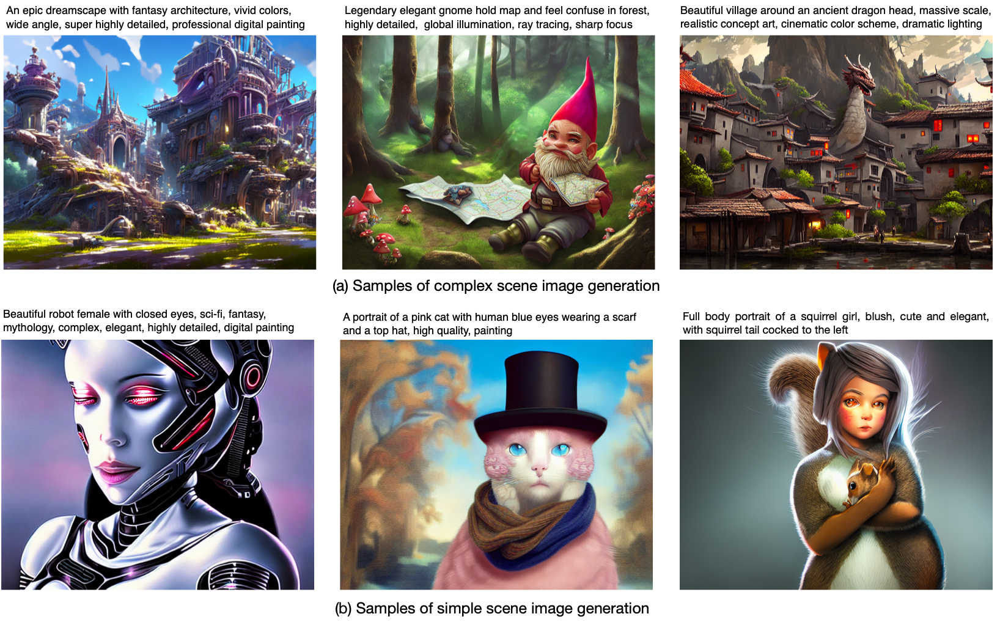

UPainting: Unified Text-to-Image Diffusion Generation with Cross-modal Guidance
 Figure 1. Samples generated by UPaintint for both simple and complex scenes. UPainting has a general image generation capability, which can effectively generate simple scene images as well as complex scene images.Diffusion generative models have recently greatly improved the power of text-conditioned image generation. Existing image generation models mainly include text conditional diffusion model and cross-modal guided diffusion model, which are good at small scene image generation and complex scene image generation respectively. In this work, we propose a simple yet effective approach, namely UPainting, to unify simple and complex scene image generation, as shown in Figure 1. Based on architecture improvements and diverse guidance schedules, UPainting effectively integrates cross-modal guidance from a pretrained image-text matching model into a text conditional diffusion model that utilizes a pretrained Transformer language model as the text encoder. Our key findings is that combining the power of large-scale Transformer language model in understanding language and image-text matching model in capturing cross-modal semantics and style, is effective to improve sample fidelity and image-text alignment of image generation. In this way, UPainting has a more general image generation capability, which can generate images of both simple and complex scenes more effectively. To comprehensively compare text-to-image models, we further create a more general benchmark, UniBench, with well-written Chinese and English prompts in both simple and complex scenes. We compare UPainting with recent models and find that UPainting greatly outperforms other models in terms of caption similarity and image fidelity in both simple and complex scenes.
 Figure 3. More samples generated by UPainting for both simple and complex scenes.
Figure 3. More samples generated by UPainting for both simple and complex scenes.